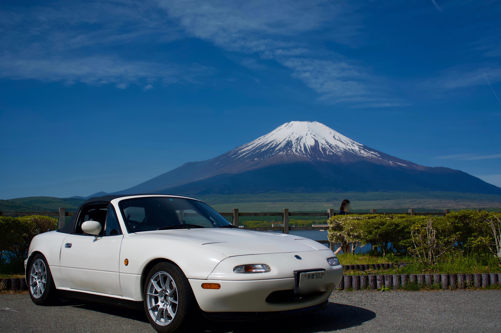

現在不動車です 状況を撮影した動画をアップしています youtube
エンジン：約100,000km
４年前にヤフオクで購入した時に、前のオーナーさんからは
『メータで50,000kmの時に一度OHしている』
とお聞きしています。
なので、ちょうどOH後10万kmほどで、タイミングベルトを交換した
タイミングで不動車になっています。
4年前にヤフオクに出されていた時の商品紹介文です。
ロードスターに搭載している
パーツだとかがわかりやすいので、記載しました。
ただ、４年前とはだいぶ
変更した点や取り替えた部品がありますので、その部分は赤文字で追記しています。
私が納車時から記録していたエクセルシートです。
基本情報シート：走行距離だとか、オイル交換とそのブランドとかを記載しています
交換部品シート：「いつ、どの部品を何に交換して、その結果どうなった」を記載しています
ロードスターの写真をアップロードしました。
だいぶ写真映りの良いものを集めています(笑)